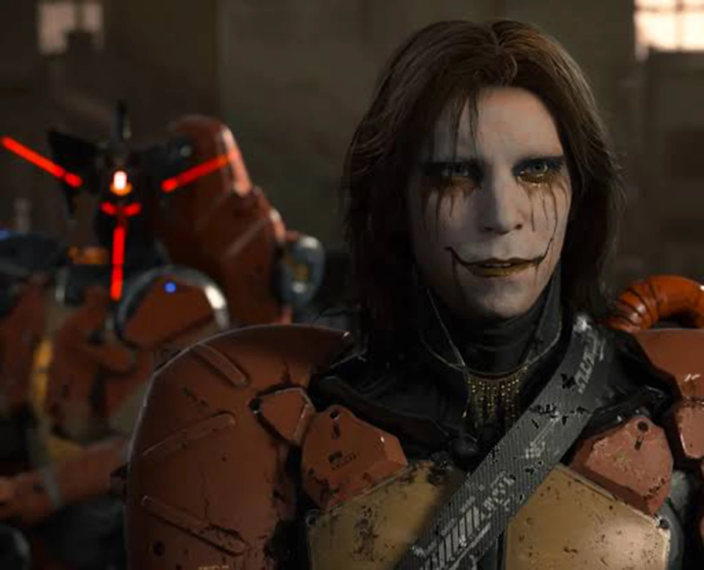
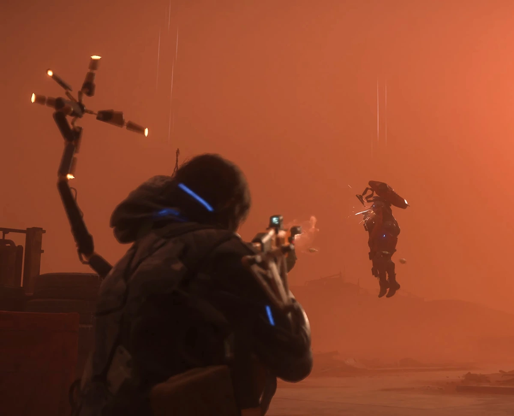
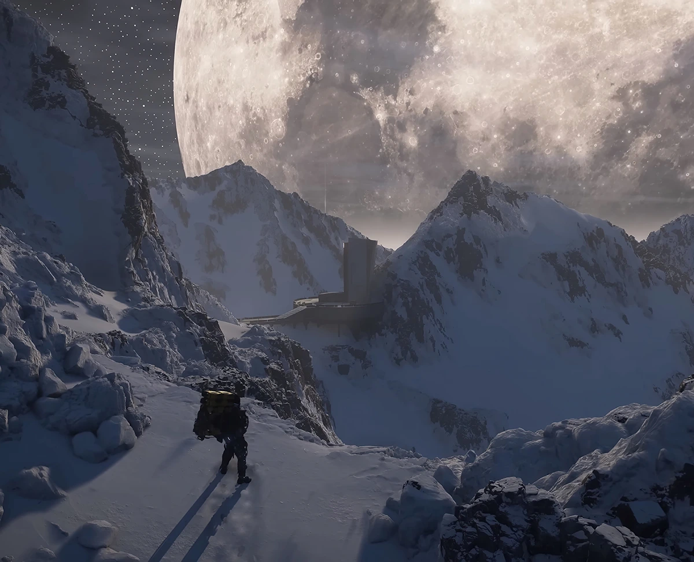
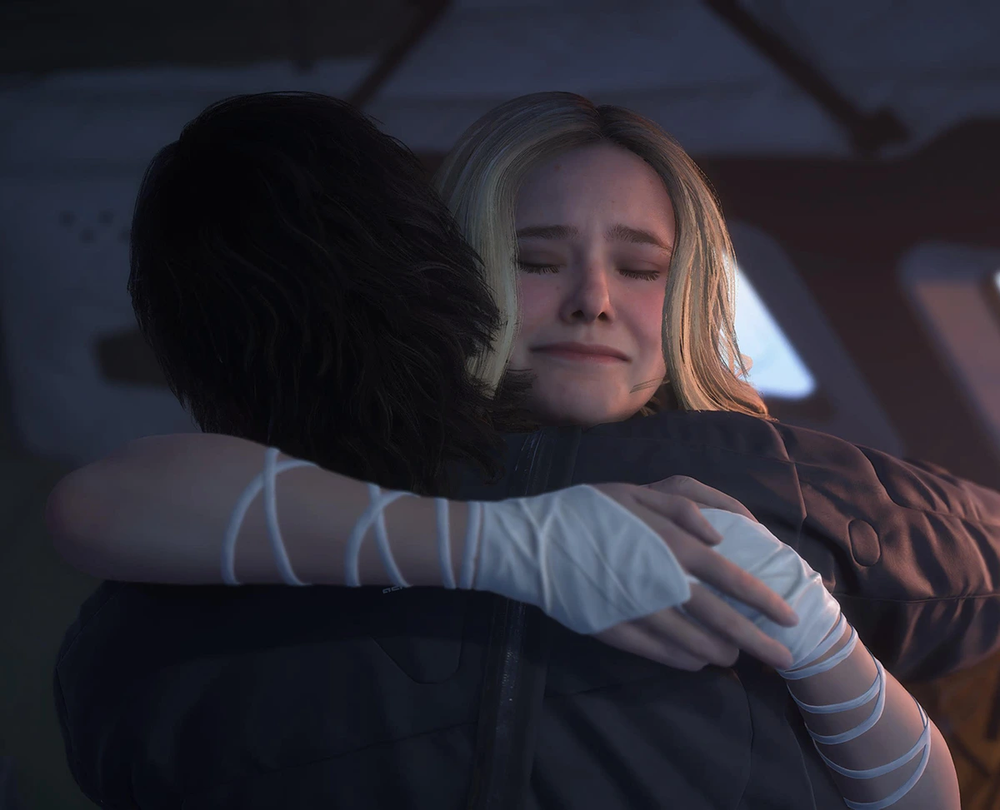
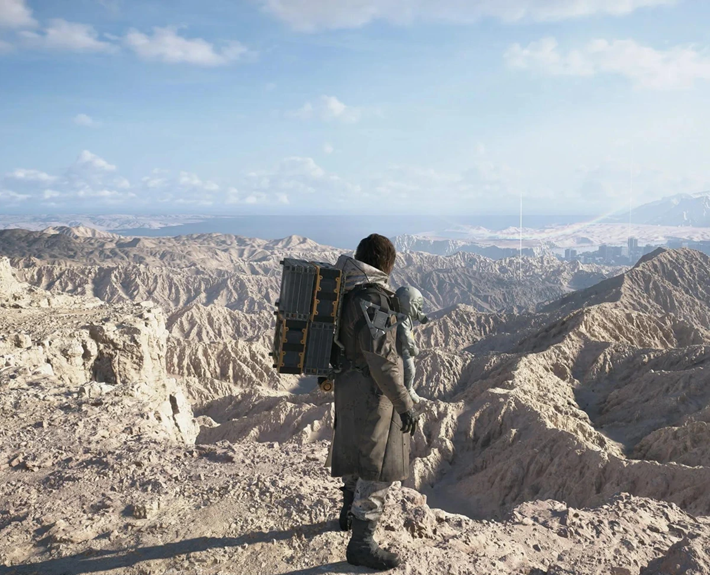

With video games, the second time's the charm. It's no different with Kojima's latest.
Video games differ from movies in a lot of ways, and yet their paths cross regularly. Setting aside the obvious differences concerning interactivity, there's an interesting and often overlooked distinction when it comes to sequels. Movies are much more hit-or-miss when it comes to continuing a series or franchise. There are plenty of examples where the first movie captures lightning in a bottle that most sequels fail to recapture. And maybe that's the problem with movies: trying to replicate that success. In film, sequels that take a different direction from their predecessors are often the ones that succeed. An example off the top of my head would be Blade Runner 2049 – it's its own movie that still ties back to the original. Long story short: when a movie sequel tries to do the exact same thing as the first one, it usually backfires.

Games are the opposite. Four times out of five, the second game will be better, or at least on the same level as the first one. I don't have this down to a science, of course, and there are exceptions to everything. It's more of a hunch. But why is that? How come audiences call filmmakers out for making the same movie twice, while players don't mind nearly as much when game sequels do something similar? The answer brings us back to interactivity. Playing with the same mechanics in a different context or environment doesn't feel the same as watching two very similar movies. As a player, you're willing to play along with more or less the same mechanics, just polished or improved. But if I told you that you were gonna watch The Force Awakens after watching A New Hope yesterday, that wouldn't sound quite as exciting.
Games get better through iteration – from a developer's perspective, I mean. Developers gather feedback from the first outing and implement changes. They expand the experience rather than changing it entirely. Random cases in point? KCD2, Assassin's Creed 2, Jedi Survivor, Max Payne 2, and yes, Death Stranding 2. And just so we're clear, I'm mainly talking about gameplay systems and mechanics here. Story, art direction and things of that nature are highly subjective, certainly more so than the gameplay side of things. Death Stranding 2 is a great example of what I'm getting at: keep what worked, expand on it where possible and throw in some new additions.
Announcement Trailer
In the first couple of hours of Death Stranding 2, I was surprised, sceptical even, at how much had stayed exactly the same compared to the first game. Is this it? Almost six years for this? The story kept pushing me along, but I remained a little jaded. Are we just gonna get a new map and some story to pull us through it? Well, yes and no. Granted, the game shows you an earthquake and a landslide in the first five minutes, neither of which happened in the first Death Stranding, but that wasn't enough to put my worries to rest. As the narrative progressed, it became obvious that the game was building towards something bigger than just a new continent to connect. A plethora of additions and changes to established mechanics and systems started to emerge.
You're tasked with making a short trip to get you back into the flow of things. On the way, you'll run into a sandstorm. Boom, just like that, a new weather hazard. Alright, this might get interesting after all. When it's time to head back, you're surprised by a new type of enemy – ghost mechs. Considering how much Death Stranding likes to explain things to the player up front, these things remained wonderfully mysterious for a while, which I really liked.
What I also noticed during my stay in Mexico, which serves as a sort of intro map, was how much better the pacing felt compared to the first DS. You get the essential equipment and the ability to craft it a little earlier. The same goes for vehicles, which are unlocked pretty quickly. DS2 wastes much less time getting you up to speed with the basics you'll need to succeed. A few deliveries later, the game throws you into your first BT encounter. Here you'll get a feel for what you can and can't get away with around these blokes. Everything goes smoothly until you reach the first boss fight. It's a huge BT skull, and I'll be honest – all of a sudden, playing on Brutal difficulty didn't seem like such a good idea anymore. Nevertheless, I managed to beat it with a little perseverance, and that wrapped up the introductory portion of Death Stranding 2.

After that, the game makes it clear that your main objective will be to connect Australia to the chiral network, just as we connected North America in the first game. Yeah, whatever, I thought. The story is storying to explain the new map. All good. But once I arrived and started doing Sam's day job, I kept running into little additions to the gameplay left and right. BTs that can see you? Alright, bring them on. Repairing mining stations that make rebuilding highways a tad bit easier? Don't mind if I do. Saving wild animals and bringing them to an animal shelter? That's new too. So-called chiral creatures that make you rethink your routes? Those are annoying, but they still add a new component to the gameplay we already know so well. A monorail, homing mines, a cargo pickup cannon mounted on an off-roader, rubber pizza (it makes sense in the game, kind of...), ghost mech dogs, a coffin board – the list goes on.
A few of these are real game changers. Take the coffin board, for example. It comes a little out of nowhere, but after an altercation with the main villain, you'll unlock the ability to craft one. It's exactly what it sounds like – you hop on the coffin, it starts to levitate and off you go. What sets it apart from regular vehicles? The speed! The speed, man, it's ridiculously fast. Not only that, it handles uneven terrain much better than the bike or the off-roader. But wait, that's still not all. The cherry on top is its ability to cross bodies of water. It just levitates above the surface like the water isn't even there.
Unlocking the board made such a difference that I started wondering whether it was breaking the game. A reality check wasn't far off, though. While riding along the surface of a river and taking a turn a little too sharply, I got thrown off the board along with all my cargo. There I was, swimming in the river, desperately trying to recover all those precious boxes. After getting out of the water, I couldn't find the board itself. This was a painful lesson in not trying to handle the board like a regular vehicle. It handles more like the carriers, except it has its own propulsion system. Fair enough, Kojima. It has to have some drawbacks, otherwise the game would be over in half the time.

But the coffin board wasn't done surprising me. When I was tasked with connecting an outpost in the mountains, I remembered that the board can't operate outside the chiral network. This is the main limitation that keeps the whole thing in check. It's more of a "travel quickly between connected preppers" kind of tool, but if you're headed to unexplored parts of the continent, leave the board at the terminal.
Another sizeable addition is the APAS Enhancements system. It's basically a skill tree that acts as a loadout of sorts. At the start, you're given a certain number of points that you can allocate to enhancements across several categories. Notice that I said "allocate" and not "spend", because you can deactivate an enhancement and reassign its points elsewhere, or just leave them unallocated. If you love making your life harder, you can bypass this entire system and never interact with it. The number of available points grows as you help the preppers, and the categories cover all aspects of the porter gameplay: battery efficiency, odradek scanner upgrades, aim assist, an increase in the amount of shared equipment and structures, keeping cargo secured when you fall, stealth and combat improvements, better balance, additional building features and so on.
Sam's backpack also gets some new equipment. The selection ranges from grenade pouches, ammo bags and a back protector, which experienced porters may already be familiar with, to new additions like solar chargers and antigravity devices. A very nice selection of gadgets to help you out, even if just a little. Most of the backpack charms are new too.

Last but not least: the DHV Magellan. I don't have that much to say about it since I didn't use it much. It's basically a mobile safe house and garage that can transport cargo. Yes, you read that right. You can skip some of the core gameplay this way, but it comes at a price. Your deliveries are evaluated with Magellan's help in mind. As in, a 75% reduction in cargo value and likes received. It's a nice option to have, I guess, but it undercuts so much of what the gameplay is about that I just couldn't be bothered to even try transporting anything with it.
It's not all bad, though. One nice quality-of-life feature is that Magellan always emerges near the prepper outpost you've just connected. This ensures that your central safe house is always nearby and that the story can deliver its next beat without making you backtrack across half the map.
Overall, Death Stranding 2 improves on the first game in more ways than one. Though I was sceptical at the start, the sequel slowly grew on me with its gameplay additions, making the experience feel fresh again. The story alone is enough motivation to get your hands dirty, but all these gameplay additions and improvements make the Kojimaisms much easier to take in stride.

Games are the opposite. Four times out of five, the second game will be better, or at least on the same level as the first one. I don't have this down to a science, of course, and there are exceptions to everything. It's more of a hunch. But why is that? How come audiences call filmmakers out for making the same movie twice, while players don't mind nearly as much when game sequels do something similar? The answer brings us back to interactivity. Playing with the same mechanics in a different context or environment doesn't feel the same as watching two very similar movies. As a player, you're willing to play along with more or less the same mechanics, just polished or improved. But if I told you that you were gonna watch The Force Awakens after watching A New Hope yesterday, that wouldn't sound quite as exciting.
Games get better through iteration – from a developer's perspective, I mean. Developers gather feedback from the first outing and implement changes. They expand the experience rather than changing it entirely. Random cases in point? KCD2, Assassin's Creed 2, Jedi Survivor, Max Payne 2, and yes, Death Stranding 2. And just so we're clear, I'm mainly talking about gameplay systems and mechanics here. Story, art direction and things of that nature are highly subjective, certainly more so than the gameplay side of things. Death Stranding 2 is a great example of what I'm getting at: keep what worked, expand on it where possible and throw in some new additions.
In the first couple of hours of Death Stranding 2, I was surprised, sceptical even, at how much had stayed exactly the same compared to the first game. Is this it? Almost six years for this? The story kept pushing me along, but I remained a little jaded. Are we just gonna get a new map and some story to pull us through it? Well, yes and no. Granted, the game shows you an earthquake and a landslide in the first five minutes, neither of which happened in the first Death Stranding, but that wasn't enough to put my worries to rest. As the narrative progressed, it became obvious that the game was building towards something bigger than just a new continent to connect. A plethora of additions and changes to established mechanics and systems started to emerge.
You're tasked with making a short trip to get you back into the flow of things. On the way, you'll run into a sandstorm. Boom, just like that, a new weather hazard. Alright, this might get interesting after all. When it's time to head back, you're surprised by a new type of enemy – ghost mechs. Considering how much Death Stranding likes to explain things to the player up front, these things remained wonderfully mysterious for a while, which I really liked.
What I also noticed during my stay in Mexico, which serves as a sort of intro map, was how much better the pacing felt compared to the first DS. You get the essential equipment and the ability to craft it a little earlier. The same goes for vehicles, which are unlocked pretty quickly. DS2 wastes much less time getting you up to speed with the basics you'll need to succeed. A few deliveries later, the game throws you into your first BT encounter. Here you'll get a feel for what you can and can't get away with around these blokes. Everything goes smoothly until you reach the first boss fight. It's a huge BT skull, and I'll be honest – all of a sudden, playing on Brutal difficulty didn't seem like such a good idea anymore. Nevertheless, I managed to beat it with a little perseverance, and that wrapped up the introductory portion of Death Stranding 2.
After that, the game makes it clear that your main objective will be to connect Australia to the chiral network, just as we connected North America in the first game. Yeah, whatever, I thought. The story is storying to explain the new map. All good. But once I arrived and started doing Sam's day job, I kept running into little additions to the gameplay left and right. BTs that can see you? Alright, bring them on. Repairing mining stations that make rebuilding highways a tad bit easier? Don't mind if I do. Saving wild animals and bringing them to an animal shelter? That's new too. So-called chiral creatures that make you rethink your routes? Those are annoying, but they still add a new component to the gameplay we already know so well. A monorail, homing mines, a cargo pickup cannon mounted on an off-roader, rubber pizza (it makes sense in the game, kind of...), ghost mech dogs, a coffin board – the list goes on.
A few of these are real game changers. Take the coffin board, for example. It comes a little out of nowhere, but after an altercation with the main villain, you'll unlock the ability to craft one. It's exactly what it sounds like – you hop on the coffin, it starts to levitate and off you go. What sets it apart from regular vehicles? The speed! The speed, man, it's ridiculously fast. Not only that, it handles uneven terrain much better than the bike or the off-roader. But wait, that's still not all. The cherry on top is its ability to cross bodies of water. It just levitates above the surface like the water isn't even there.
Unlocking the board made such a difference that I started wondering whether it was breaking the game. A reality check wasn't far off, though. While riding along the surface of a river and taking a turn a little too sharply, I got thrown off the board along with all my cargo. There I was, swimming in the river, desperately trying to recover all those precious boxes. After getting out of the water, I couldn't find the board itself. This was a painful lesson in not trying to handle the board like a regular vehicle. It handles more like the carriers, except it has its own propulsion system. Fair enough, Kojima. It has to have some drawbacks, otherwise the game would be over in half the time.
But the coffin board wasn't done surprising me. When I was tasked with connecting an outpost in the mountains, I remembered that the board couldn't operate outside the chiral network. This is the main limitation that keeps the whole thing in check. It's more of a "travel quickly between connected preppers" kind of tool, but if you're headed to unexplored parts of the continent, leave the board at the terminal.
Another sizeable addition is the APAS Enhancements system. It's basically a skill tree that acts as a loadout of sorts. At the start, you're given a certain number of points that you can allocate to enhancements across several categories. Notice that I said "allocate" and not "spend", because you can deactivate an enhancement and reassign its points elsewhere, or just leave them unallocated. If you love making your life harder, you can bypass this entire system and never interact with it. The number of available points grows as you help the preppers, and the categories cover all aspects of the porter gameplay: battery efficiency, odradek scanner upgrades, aim assist, an increase in the amount of shared equipment and structures, keeping cargo secured when you fall, stealth and combat improvements, better balance, additional building features and so on.
Sam's backpack also gets some new equipment. The selection ranges from grenade pouches, ammo bags and a back protector, which experienced porters may already be familiar with, to new additions like solar chargers and antigravity devices. A very nice selection of gadgets to help you out, even if just a little. Most of the backpack charms are new too.
Last but not least: the DHV Magellan. I don't have that much to say about it since I didn't use it much. It's basically a mobile safe house and garage that can transport cargo. Yes, you read that right. You can skip some of the core gameplay this way, but it comes at a price. Your deliveries are evaluated with Magellan's help in mind. As in, a 75% reduction in cargo value and likes received. It's a nice option to have, I guess, but it undercuts so much of what the gameplay is about that I just couldn't be bothered to even try transporting anything with it.
It's not all bad, though. One nice quality-of-life feature is that Magellan always emerges near the prepper outpost you've just connected. This ensures that your central safe house is always nearby and that the story can deliver its next beat without making you backtrack across half the map.
Overall, Death Stranding 2 improves on the first game in more ways than one. Though I was sceptical at the start, the sequel slowly grew on me with its gameplay additions, making the experience feel fresh again. The story alone is enough motivation to get your hands dirty, but all these gameplay additions and improvements make the Kojimaisms much easier to take in stride.